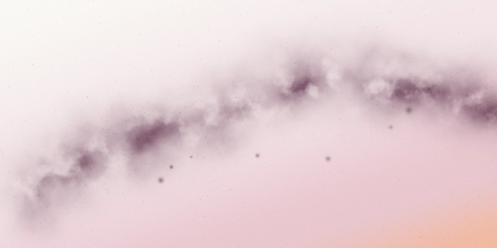
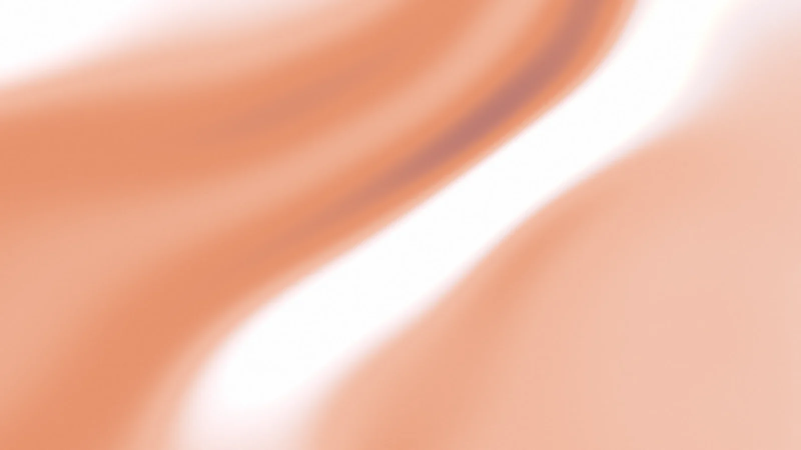
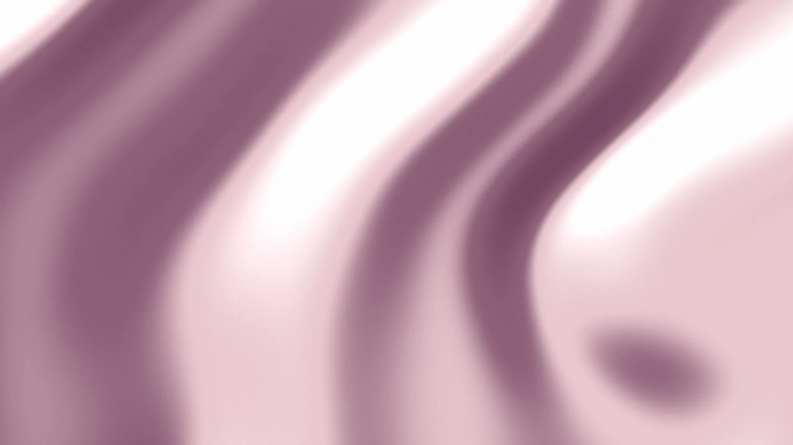
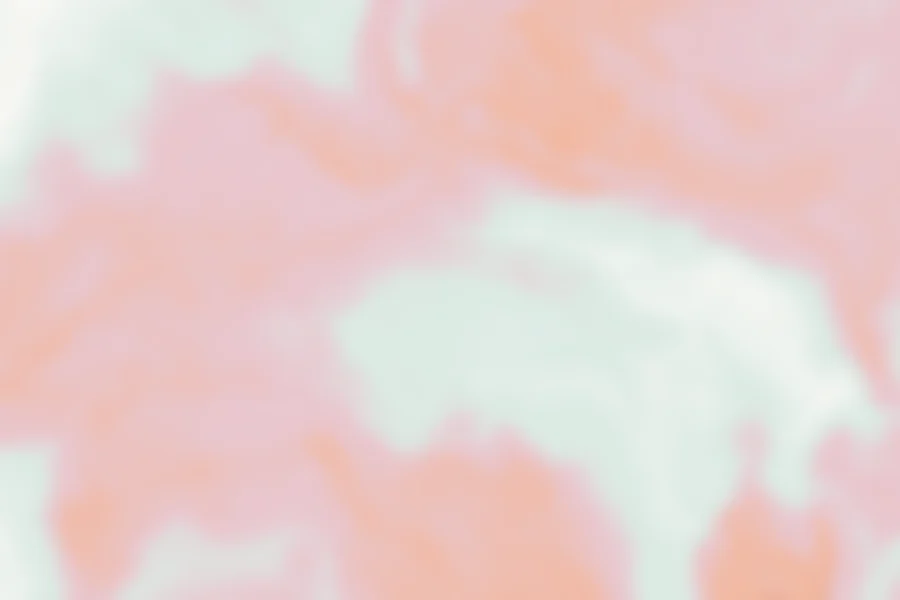

Hera · propuesta visual
Imágenes fluidas
Generadas por código con la paleta de Hera, sin fotos ni licencias. Pesan entre 7 y 50 KB. Son una primera tanda: cualquier variante se puede ajustar (color, forma, densidad).
1 · Banda final «¿Qué te preocupa hoy?»
Como la banda «Partner with Capably». La Vía Láctea del mito de Hera: la leche derramada que forma la estela de estrellas.
A · Vía Láctea, atardecerGinecólogo, matrona y pediatra
¿Qué te preocupa hoy?
Pregúntalo y te responde una profesional en menos de 48 h. Tus dos primeras consultas, gratis.
Pregunta tu duda gratisGinecólogo, matrona y pediatra
¿Qué te preocupa hoy?
Pregúntalo y te responde una profesional en menos de 48 h. Tus dos primeras consultas, gratis.
Pregunta tu duda gratisGinecólogo, matrona y pediatra
¿Qué te preocupa hoy?
Pregúntalo y te responde una profesional en menos de 48 h. Tus dos primeras consultas, gratis.
Pregunta tu duda gratis2 · Fondo de la portada, detrás del móvil
Sustituye al verde liso actual.

Vía Láctea, atardecer
Seda melocotón
Tinta en agua, cálida
3 · Pastillas de icono en las tarjetas
Como las cuatro tarjetas de Capably: el mismo material, recortado en pequeño, con un icono blanco de línea.
Tinta en agua (cálida · ciruela · salvia)
Embarazo
Cómo crece tu bebé semana a semana y lo normal en cada momento.
Posparto
Tu recuperación, la lactancia y el suelo pélvico, sin juicios.
Tu bebé
Lo normal a su edad, su peso, el sueño y las vacunas.
Seda (rosa · melocotón) y Vía Láctea
Embarazo
Cómo crece tu bebé semana a semana y lo normal en cada momento.
Posparto
Tu recuperación, la lactancia y el suelo pélvico, sin juicios.
Tu bebé
Lo normal a su edad, su peso, el sueño y las vacunas.
Las imágenes, sueltas



